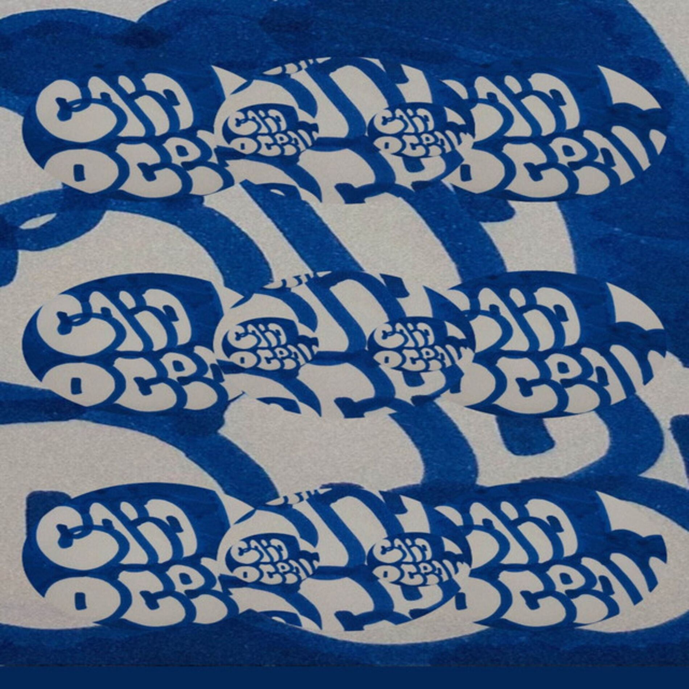
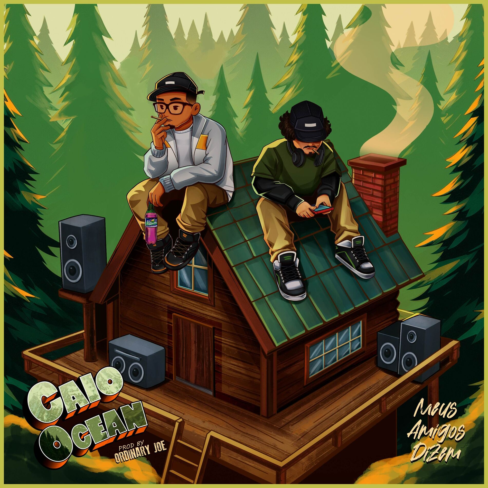
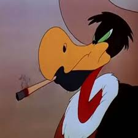
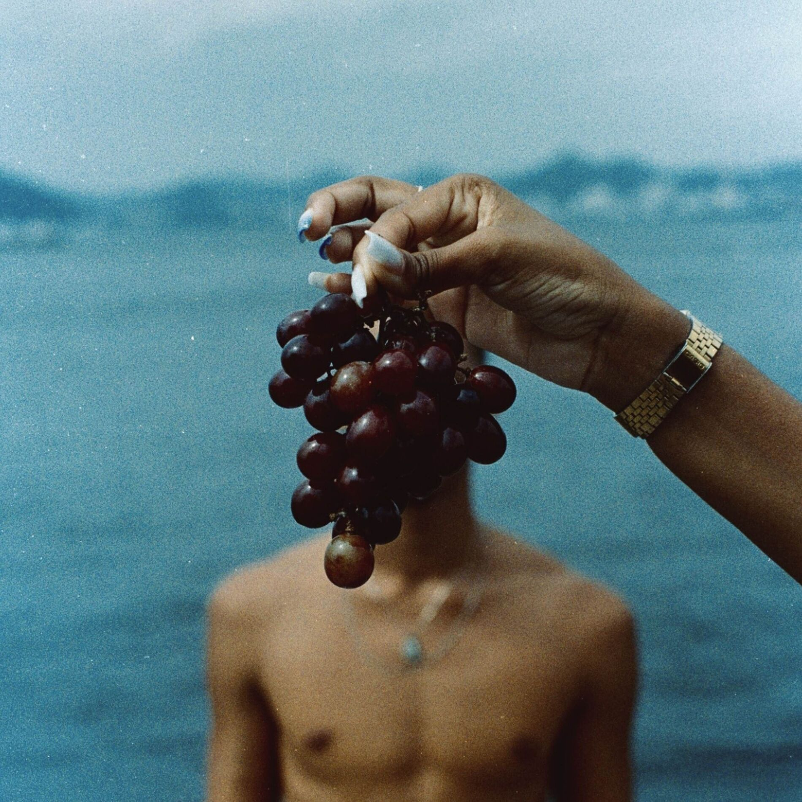

Caio Ocean
Rapper e Compositor
Popular
12/12
Atlas

Terra de Ninguém
Caras Como Eu

Meus Amigos Dizem

Carlos Urubu
Discografia

Garoto Oceano
EP · 2024
Sobre
Caio Ocean é um rapper do rio que mistura rap, lo-fi e uns toques acústicos, sempre com letras bem sentimentais e reais. Ficou conhecido por falar de amadurecimento, insegurança e vida real de um jeito bem único. Em 2024, lançou o EP Garoto Oceano, feito todo no celular, e já virou promessa forte no rap nacional.